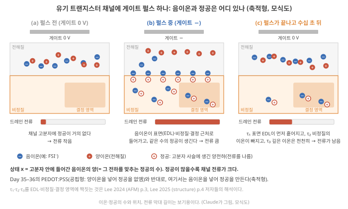
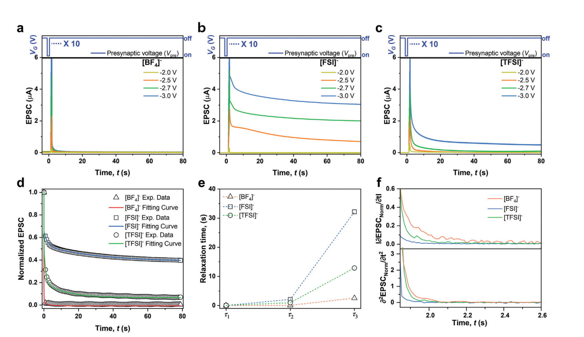
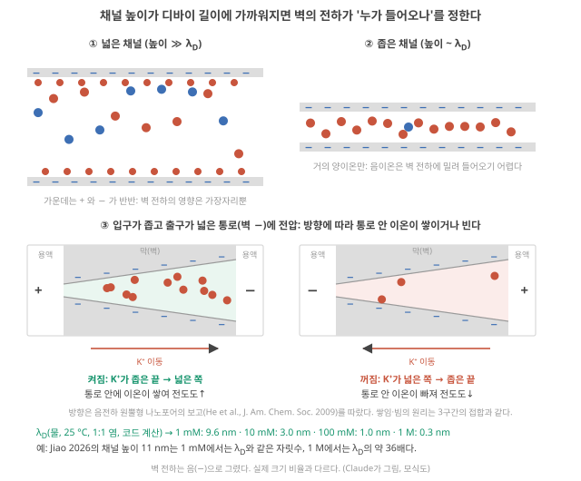
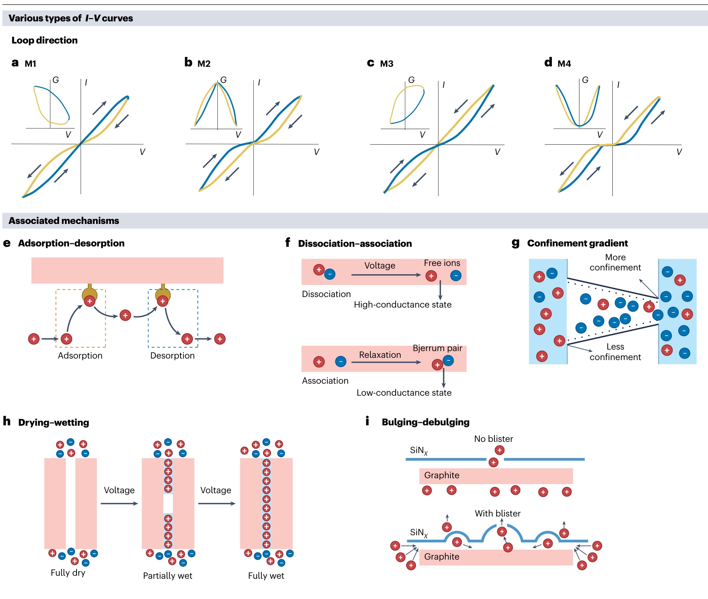
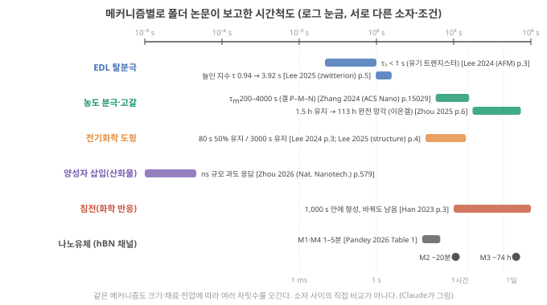

D20. 이온 소자에서 memory와 nonlinearity는 어디서 오는가?
Phase 4 · 왜 이온성 고분자인가 · 11월 12일 (목)
답에 들어가야 할 것 — EDL 충전, 농도 분극·ion depletion, 전기화학 도핑, intercalation, nanofluidic 표면전하, 산화환원. 각각의 휘발성·시간상수·가역성
기본 경로: ① 사전 테스트(권장) → ② 학습자료(구간마다 잠깐 점검까지) → ③ 백지 회상 → ④ 가르치듯 내 답. ⓪·⑤와 접힌 '심화'·'추가 연습'은 선택입니다. 한 번에 끝낼 필요 없이 구간 단위로 나눠 읽어도 되고, 다시 열면 '지난번 읽던 곳' 링크가 뜹니다.
① 사전 테스트와 먼저 만들어 보기
아직 배우지 않은 내용을 먼저 풀어 봅니다. 많이 틀리는 것이 정상이고, 그게 목적입니다. 먼저 답해 본 문제는 읽을 때 눈에 들어오고 더 오래 남습니다. 문제마다 정답만 보이고, 이유는 학습자료와 ⑤ 다시 풀기에서 봅니다. 다 풀면 학습자료가 열립니다. 건너뛰려면 학습자료 위의 '그냥 읽기'를 누르세요(권장 단계일 뿐 필수는 아닙니다).
② 학습자료
어제는 이온에 전자에 없는 상태변수가 있다는 데까지 왔습니다. 오늘은 그 상태변수가 구체적으로 무엇이고, 거기서 RC가 필요로 하는 두 재료, 기억과 비선형이 어떻게 나오는지를 봅니다. Phase 2에서 이 두 재료가 무엇인지는 수학으로 봤습니다(D9 기초: fading memory, D10 기초: 비선형). 오늘은 그것을 이온 물리의 언어로 다시 씁니다.
이온 소자의 기억과 비선형을 만드는 메커니즘은 여럿이고, 한 소자 안에서 섞입니다. 오늘은 이해를 위해 넷으로 나눕니다(서로 겹치는 분류입니다).
- 이온 소자에서 '기억'과 '비선형'은 정확히 무엇이 바뀌고 남는 것인가?
- 전기이중층(EDL) 충전: 가장 빠르고 가장 잘 잊는 기억은 어떻게 생기나?
- 농도 분극과 이온 고갈: 접합에서 이온이 빠져나가면 왜 정류와 기억이 함께 생기나? (내 polyelectrolyte heterojunction의 물리)
- 전기화학 도핑·삽입·산화환원(그리고 침전): 이온이 물질 안으로 들어가면 무엇이 달라지나?
- 나노유체 표면전하: 채널이 디바이 길이만큼 좁아지면 무엇이 달라지나?
- 메커니즘마다 휘발성·시간상수·가역성은 어떻게 다르고, 연구는 어디까지 왔으며 무엇이 남았나?
1. 기억과 비선형은 '무엇이 바뀌고 남는가'의 문제다
이 구간을 읽고 나면 이온 소자의 기억과 비선형을 "상태 x가 쌓이고 새는 방식"과 "출력이 x와 전압에 기대는 방식"으로 나눠 말하고, 오늘 메커니즘마다 기록할 세 가지 성질(휘발성·시간상수·가역성)이 무엇인지 안다.
Phase 2의 두 단어를 먼저 다시 꺼냅니다. fading memory는 지금 상태에 과거 입력의 영향이 남되 오래된 것일수록 약해지는 성질이었고, 비선형은 입력을 두 배로 했을 때 출력이 두 배가 되지 않는 것(겹침 원리가 깨지는 것)이었습니다. RC는 둘 다 필요하고, 둘은 서로 자원을 나눠 쓰는 관계였습니다(D11 기초: 상충).
이온 소자에서 이 두 성질은 어디서 오나? 답의 뼈대는 하나입니다. 소자 안에 입력에 따라 바뀌고, 바뀐 채로 얼마간 남는 양이 있습니다. 이것을 상태 \(x\)라고 부르겠습니다(D19 3구간의 '상태변수'). 나노유체 memristor(멤리스터: 지나간 전압·전류의 이력에 따라 저항이 바뀌고 그 값이 얼마간 남는 2단자 소자) 리뷰인 Pandey 2026은 이것을 일반 memristor의 두 식으로 적습니다. 전류는 \(i = G(x, V)\,V\)이고, 내부 상태는 \(\dot{x} = f(x, V)\)로 변하며, 이 \(x\)의 동역학이 히스테리시스 고리(전압을 올릴 때와 내릴 때 전류가 서로 다른 길을 지나 I–V 그래프에 생기는 고리)의 넓이·방향·휘발성을 정한다는 것입니다. Pandey 2026, p.7 여기서 \(\dot{x}\)는 "\(x\)가 1초에 얼마나 바뀌나"(시간에 대한 변화율)를 뜻합니다.

이 틀로 보면 오늘의 네 메커니즘은 "\(x\)가 무엇이냐"의 차이입니다. EDL에서는 계면에 모인 전하, 농도 분극에서는 접합이나 채널의 이온 농도, 전기화학 도핑에서는 고분자·결정 속으로 들어간 이온의 양(과 그에 따른 전자적 전하), 나노유체에서는 좁은 채널 속 반대이온의 농도나 벽에 붙은 이온의 양입니다.
2–5구간을 읽는 순서. 메커니즘마다 같은 네 질문을 던집니다. ⓐ 펄스 하나를 주기 전·주는 동안·끝난 뒤에 이온은 어디 있나(구간마다 그림 한 장). ⓑ 그중 무엇이 기억을 담는 \(x\)인가. ⓒ \(x\)가 원래대로 돌아가는 시간 \(\tau\)는 무엇이 정하고, 숫자로 얼마쯤인가. ⓓ 왜 출력이 입력에 비례하지 않나(비선형). 전기화학을 공부한 독자에게는 익숙한 이름이 붙습니다. EDL은 Gouy–Chapman 확산층, 농도 분극은 Nernst–Planck 식의 확산·이동과 Cottrell식 고갈, 도핑·산화환원은 Nernst 평형과 Butler–Volmer 속도입니다. 오늘은 그 지식을 '상태·기억·비선형'의 말로 옮깁니다.
오늘 메커니즘마다 기록할 세 가지. 6구간의 표를 채우기 위해 용어를 정해 둡니다.
- 휘발성(volatility): 입력을 끊었을 때 \(x\)가 스스로 원래대로 돌아가는가. 저절로 돌아가면 휘발성, 거의 남아 있으면 비휘발성입니다. 이것은 "예/아니오"가 아니라 정도의 문제이고, 무엇과 비교하는지(과제의 시간)에 따라 말이 달라집니다.
- 시간상수: 그 돌아가는 빠르기의 척도. 지수 하나로 줄어들면 \(e^{-t/\tau}\)의 \(\tau\)입니다. 여러 과정이 섞이면 \(\tau\)도 여럿입니다(D13에서 본 것처럼 \(\tau\)는 모형의 매개변수이고 retention과 같은 말이 아닙니다, D13 기초).
- 가역성: 반대 입력으로 \(x\)를 원래 값으로 되돌릴 수 있는가, 몇 번이나(내구성) 되돌릴 수 있는가. 오래 남는 상태가 되돌리기도 어려운 경우가 많습니다.
"이온 소자의 히스테리시스 고리가 크면 기억이 좋다" — 고리의 넓이는 입력을 얼마나 빨리 바꿨느냐에 달려 있습니다. 같은 소자도 아주 느리게 훑으면 고리가 닫히고, 아주 빠르게 훑어도 닫힙니다(3구간 그림 4). 고리 넓이 하나로 "기억이 좋다"고 쓰려면 훑은 속도와, 그 속도가 과제의 입력 간격과 맞는지를 함께 적어야 합니다.
- 기억과 비선형의 뿌리는 같다: 입력에 따라 바뀌고 남는 상태 \(x\). \(i = G(x,V)V\), \(\dot{x} = f(x,V)\) Pandey 2026, p.7.
- 메커니즘의 차이는 "\(x\)가 무엇인가"의 차이다(계면 전하, 접합 농도, 들어간 이온의 양, 채널 속 반대이온·흡착량).
- 메커니즘마다 휘발성·시간상수·가역성을 적는다. 셋은 서로 다른 성질이다.
2. 전기이중층(EDL) 충전: 가장 빠르고 가장 잘 잊는 기억
이 구간을 읽고 나면 전기이중층이 무엇이며 왜 축전기처럼 동작하는지, 그 두께와 충전 시간을 작은 숫자로 어림하고, EDL만으로 만든 기억이 왜 대개 휘발성인지(그리고 언제 그렇지 않은지) 말할 수 있다.
전기이중층(EDL) 충전
① 왜 필요한가. 이온 소자의 거의 모든 전압은 어딘가에서 금속 전극이나 반도체와 만납니다. 그 경계에서 가장 먼저, 가장 빠르게 일어나는 일이 EDL의 충전입니다. 이온 트랜지스터(전해질 속 이온으로 채널을 여닫는 트랜지스터. 트랜지스터는 게이트 전압으로 전류를 여닫는 수도꼭지, D2 기초)가 켜지는 것도, 펄스 직후 전류가 확 올랐다가 곧 떨어지는 것도 대부분 이 과정입니다. 다른 메커니즘을 보려면 이것부터 떼어 낼 줄 알아야 합니다.
② 무엇이고 어디에 있나. 소금물에 금속 전극을 담그고 전극에 (−) 전압을 겁니다. 전극 표면에 전자가 남게 되고, 소금물 속 양이온(K⁺)이 끌려와 표면 바로 앞에 모이며, 음이온(Cl⁻)은 밀려납니다. 전극 쪽의 (−) 전하 한 층과 용액 쪽의 (+) 이온 한 층, 이렇게 전하 두 층이 마주 보므로 전기이중층(electric double layer, EDL)이라 부릅니다. 전극에서 멀어지면 다시 양이온과 음이온의 수가 같아집니다(전기적 중성). 이온이 모여 있는 층의 두께는 디바이 길이(Debye length) \(\lambda_D\) 정도입니다. 한 줄로 말하면 표면 전하의 전기적 영향이 그 앞에 모인 이온에 가려져(차폐되어) 거의 사라지는 거리입니다. 전극 바로 앞에 모인 양이온이 전극의 음전하를 가려 주므로, 그보다 멀리 있는 이온은 전극을 거의 느끼지 못합니다. 염이 진할수록 가려 줄 이온이 가까이에 많아 짧은 거리에서 가리는 일이 끝나므로 층이 얇아집니다. 전기화학의 Gouy–Chapman 모형에서 확산층 두께의 척도로 나오는 길이가 바로 이것입니다.
숫자로는 물속 1:1 염(양이온·음이온이 모두 1가인 KCl·NaCl 같은 염), 25 °C에서 1 mM 9.6 nm, 10 mM 3.0 nm, 100 mM 0.96 nm, 1 M 0.30 nm로 수 nm 자릿수입니다(코드 계산, 그림 2 아래). 식은 \(\lambda_D = \sqrt{\varepsilon_r\varepsilon_0 kT/(2ne^2)}\)입니다(\(\varepsilon_r\varepsilon_0\) 용매의 유전율, \(kT\) 열에너지, \(n\) 염의 수 농도(1 m³ 안의 염 단위 수), \(e\) 기본 전하). 지금은 두 가지만 쥐면 됩니다. 농도가 100배 진해지면 두께는 \(\sqrt{100}\), 곧 10분의 1이 된다. 묽은 수용액에서는 수–수십 nm다. 오늘은 이 길이를 'EDL의 두께'(이 구간)와 '좁은 통로가 이온을 고르기 시작하는 높이'(5구간)로 씁니다. 식이 어디서 나오고 어디서 깨지는지(진한 염, 이온액체)는 D21 기초: 디바이 길이에서 유도합니다.
③ 입력이 들어오면 무슨 일이. 마주 보는 두 전하층은 축전기(커패시터, 전하를 담는 그릇, D4 기초 3)와 같습니다. 그래서 전압을 걸면 이온이 몰려오며 충전되고, 전압을 끄고 전극 사이를 이어 주면 이온이 흩어지며 방전됩니다. 이때 전자가 전극과 이온 사이를 건너가는 화학 반응은 일어나지 않습니다. 이런 과정을 비패러데이(non-Faradaic) 과정이라 하고, 반응이 일어나 전자가 건너가는 과정(4구간)을 패러데이(Faradaic) 과정이라 합니다. 충전의 빠르기는 저항–커패시터 회로처럼 \(\tau \approx RC\)로 정해집니다(D16 기초). 이온이 전해질을 지나오는 길의 저항 \(R\)과 계면의 정전용량 \(C\)의 곱입니다.
펄스 하나로 따라가면(그림 2) 이렇습니다. ① 펄스 전에는 전극에 전하가 없고, 용액 어디서나 양이온과 음이온의 수가 같습니다. ② 전극을 (−)로 만들면 K⁺가 끌려와 \(\lambda_D\) 두께의 층을 이루고 Cl⁻는 밀려납니다. 이때 전극의 전하와 그 앞 이온층의 전하량 \(Q\)가 상태 \(x\)입니다. ③ 펄스를 끄고 두 전극이 외부 회로로 이어져 있으면(방전 길이 열려 있으면) 전극의 전자가 회로로 빠져나가고 이온층은 흩어지며, \(Q\)가 \(\tau \approx RC\)로 줄어듭니다. 회로가 끊겨 있으면(열린 회로) 전하가 빠져나갈 길이 없어 층이 오래 남을 수 있습니다(아래 Wang 2025).

④ 작은 숫자로 따라가기.
단계 1 — 계면 정전용량. EDL은 아주 얇은 축전기라 면적당 정전용량이 큽니다. 폴더의 측정값 예: 이온액체 게이트를 쓴 유기 트랜지스터에서 1 Hz로 잰 값이 1.70 µF/cm²였습니다. Lee 2025 (structure), p.4 여기서는 계산을 위해 전극 하나에 10 µF/cm²를 가정합니다 [가정: 어림용]. 매끈한 금속 전극이 중간 농도 전해질에 닿을 때 흔히 쓰는 대표값은 약 20 µF/cm²이고 15–50 µF/cm²가 보고되므로 Ge 2020, p.3216, 10은 금속 전극 기준으로는 작게, 이온액체 게이트의 1.70보다는 크게 잡은 중간 어림입니다. 디바이 길이로도 자릿수를 확인할 수 있습니다. 확산층을 '판 간격이 \(\lambda_D\)인 축전기'로 보면 면적당 정전용량은 \(\varepsilon_r\varepsilon_0/\lambda_D\)이고, 10 mM에서 약 23 µF/cm²입니다(Gouy–Chapman의 작은 전위 근사, 코드 계산). 실제 계면은 전극에 붙은 조밀층(Stern 층)과 직렬로 이어져 이보다 작아지는 쪽입니다.
단계 2 — 전해질 저항. 10 mM KCl의 전도도를 이상 용액 가정으로 계산하면 약 0.15 S/m입니다(25 °C 무한 희석에서 K⁺ \(1.957\times10^{-9}\), Cl⁻ \(2.032\times10^{-9}\) m²/s인 물성표 확산계수 사용 Vanýsek 2018 (CRC); 식은 D19의 아인슈타인 관계를 전도도로 옮긴 Nernst–Einstein 식 \(\sigma = \frac{ne^2}{kT}(D_+ + D_-)\), D19 기초; 전도도는 D23에서 다시). 전극 1 cm², 간격 1 cm이면 \(R = \text{길이} \div (\text{전도도} \times \text{면적}) = 0.01 \div (0.15 \times 10^{-4}) \approx\) 670 Ω.
단계 3 — 충전 시간. 전극이 둘이고 각 계면이 축전기이므로 둘이 직렬로 이어져 전체 \(C\)는 절반, 1 cm²에 5 µF입니다. \(\tau = RC \approx 670 \times 5\times10^{-6} \approx\) 3.3 ms.
단계 4 — 무엇이 τ를 바꾸나. 간격을 1 mm로 줄이면 \(R\)이 10분의 1이라 \(\tau\)도 0.33 ms. 염을 10배 묽게 하면 \(R\)이 약 10배라 \(\tau\)도 약 10배. 전해질이 고분자 겔이나 이온액체라 전도도가 100배 낮으면 \(\tau\)도 100배. EDL 충전 시간은 재료(전도도)와 크기(간격·면적)의 곱으로 정해집니다. D21에서 이것을 \(\tau \sim \lambda_D L/D\)로 다시 씁니다.
⑤ 이름과 정확한 뜻. EDL = 전극(또는 반도체·고분자) 표면의 전하와 그 앞에 모인 반대 전하 이온층의 쌍. 두께 ~ \(\lambda_D\), 면적당 정전용량 µF/cm² 정도. 비패러데이 충전·방전은 가역적이고, 방전 길이 열려 있으면 휘발성입니다.
⑥ 뉴로모픽·RC와의 연결. EDL은 이온 소자에서 가장 빠른 상태변수입니다. 이온 게이트 트랜지스터에서는 게이트 전압이 채널 표면에 EDL을 만들고, 그 EDL이 채널의 전자적 운반자(정공·전자)를 끌어모아 채널 전류를 바꿉니다. 기억은 EDL이 흩어지는 시간입니다.
왜 비선형인가. EDL 자체는 작은 전압에서 거의 선형입니다. 축전기라 쌓인 전하가 전압에 비례하기 때문입니다(\(Q = CV\)). Gouy–Chapman 이론에서는 계면 전위가 열전압 \(kT/e\)(25 °C에서 약 26 mV, D19)보다 커지면 확산층 정전용량이 \(\cosh(e\psi/2kT)\) 꼴로 커져 \(Q\)–\(V\) 관계가 휘지만(\(\psi\): 확산층에 걸린 전위), 실제 계면에서는 조밀층이 직렬로 붙어 그 휨이 크게 누그러집니다 [폴더 밖 교과서 내용]. 그래서 이온 게이트 트랜지스터에서 눈에 띄는 비선형은 EDL보다 트랜지스터의 문턱(어느 게이트 전압부터 채널에 운반자가 모여 전류가 흐르기 시작하나, D1 기초)과 포화에서 주로 옵니다 해석.
⑦ 짧은 확인. 같은 EDL인데 전극 간격만 10배 늘리면 충전 시간은? (답: 저항이 10배라 약 10배. 단계 4.)
폴더 소자에서 EDL은 얼마나 빨리 잊나. 이온액체로 게이트한 유기 트랜지스터 논문에서 Lee 2024는 "전기장을 없애면 EDL이 빠르게 흩어져 retention 시간이 짧아진다"고 쓰고 Lee 2024 (AFM), p.1, 펄스 뒤 전류 감쇠를 시간상수 세 개로 맞춘 뒤 가장 빠른 \(\tau_1\)을 EDL 탈분극(1초 미만에 일어나는 빠른 과정)으로 귀속합니다. Lee 2024 (AFM), p.3 같은 글에서 BF₄⁻ 음이온 전해질은 순환 전압전류 곡선이 반응 봉우리 없이 사각형(전형적인 EDL 축전기의 모양)이었고, 이온이 채널 표면의 EDL에만 모인다고 해석했습니다. Lee 2024 (AFM), p.5 그 소자는 펄스를 끈 뒤 바로 원래 전류로 돌아갔습니다. Lee 2024 (AFM), p.3
EDL의 기억을 늘리려는 시도도 있습니다. Lee 2025 (zwitterion)는 LiTFSI 전해질에 양·음 전하를 한 분자에 함께 가진 zwitterion을 넣어 펄스 뒤 이완 시간을 0.94 s에서 3.92 s로, 120초 뒤 남는 비율을 0.18%에서 22.7%로 늘렸다고 보고합니다. Lee 2025 (zwitterion), p.5 저자들은 zwitterion의 음전하 끝이 채널 쪽으로 정렬해 TFSI⁻의 역확산을 정전기적으로 막는다고 해석하지만 Lee 2025 (zwitterion), p.7, 정렬을 직접 본 측정은 본문에 없습니다 해석.
원문 그림을 읽기 전에. EPSC는 트랜지스터 채널 전류(시냅스 흉내에서 부르는 이름)입니다. 아래 e·f는 같은 펄스열을 준 뒤 120초 동안의 전류이고, 가로축이 같으니 두 칸의 오른쪽 끝 높이만 비교하면 됩니다(세로축 눈금은 e가 1.6 µA, f가 0.6 µA까지로 다릅니다).

EDL이 늘 휘발성은 아니다. Wang 2025는 금·백금처럼 반응하지 않는 전극을 쓰면 전극 표면 EDL이 만드는 개방 전압이 기억처럼 동작할 수 있는데, 충전은 넣어 준 전하가 정하고 방전은 반감기가 길기 때문이라고 씁니다. Wang 2025 (Chem. Soc. Rev.), p.309 즉 EDL의 휘발성은 재료만이 아니라 방전 길이 열려 있느냐(측정 회로)에도 달려 있습니다. 해석
EDL 충전 시간을 10배 늘리고 싶습니다. 같은 전해질로 할 수 있는 방법 두 가지를 먼저 적어 보세요(힌트: \(\tau \approx RC\)에서 \(R\)과 \(C\)를 각각 무엇이 정하나). 아래 점검에서 확인합니다.
- 전기이중층 (EDL)
- 전극·반도체 표면의 전하와 그 앞에 모인 반대 전하 이온층의 쌍. 두께 ~ 디바이 길이, 면적당 µF/cm² 정도의 축전기.
- 디바이 길이 λ_D
- 이온이 표면 전하를 가려 주는(차폐하는) 거리. 1:1 염 1 mM 9.6 nm, 100 mM 0.96 nm. 유도는 D21.
- 비패러데이 / 패러데이
- 전자가 계면을 건너지 않고 이온이 모였다 흩어지기만 하는 과정 / 전자가 건너가 화학 반응(산화·환원)이 일어나는 과정.
- EDL 탈분극
- 전압을 끈 뒤 EDL의 이온이 흩어지는 과정. 이온 게이트 트랜지스터에서 보통 가장 빠른 감쇠 성분.
- EDL = 계면의 전하 두 층 = 얇은 축전기. 충전 시간 \(\tau \approx RC\)는 전해질 전도도(재료)와 간격·면적(크기)이 함께 정한다. 예: 10 mM KCl, 1 cm², 1 cm → 약 3.3 ms(가정값 계산).
- 휘발성·가역적·빠름: 이온 게이트 트랜지스터에서 1초 미만의 \(\tau_1\)으로 귀속된다 Lee 2024 (AFM), p.3.
- 화학으로 늘릴 수 있다: zwitterion 첨가로 0.94 → 3.92 s Lee 2025 (zwitterion), p.5. 방전 길을 막으면 EDL 개방 전압도 오래 남는다 Wang 2025 (Chem. Soc. Rev.), p.309.
- 비선형은 EDL 자체보다 그것이 여닫는 채널(트랜지스터 문턱)에서 주로 온다 해석.
3. 농도 분극과 이온 고갈: 접합에서 정류와 기억이 함께 생긴다
이 구간을 읽고 나면 고정 전하를 가진 겔이 왜 한 종류의 이온만 통과시키는지, polyanion–polycation 접합에서 순방향·역방향 전압이 각각 무엇을 쌓고 비우는지 단계별로 설명하고, 상태 하나(접합 농도)가 정류(비선형)와 히스테리시스(기억)를 함께 만드는 이유를 장난감 모형의 숫자로 말할 수 있다.
이 구간은 이온 다이오드와 polyelectrolyte heterojunction의 물리입니다. 이 분야를 직접 해 온 독자에게는 익숙한 그림이겠지만, 여기서는 그 그림을 RC의 언어(상태·기억·비선형)로 옮기는 데 초점을 둡니다. 아래 설명은 교과서적인 이상화이고, 실제 내 소자에서 어떤 과정이 지배하는지는 측정으로 가려야 합니다.
농도 분극·ion depletion
① 왜 필요한가. EDL은 금방 잊습니다. 이온 소자에서 수 초–수천 초의 기억과 뚜렷한 정류가 함께 보이면, 대개 이온이 어느 영역에서 빠져나가거나 쌓여 그 영역의 전도도가 바뀐 것입니다. 이것이 농도 분극과 이온 고갈입니다.
② 무엇인가: 한 종류만 통과시키는 겔. 음전하가 고분자 사슬에 붙어 움직이지 못하는 겔(polyanion 겔, 예: 술폰산기)을 생각합니다. 겔 전체가 전기적으로 중성이려면 그 고정 음전하만큼 움직이는 양이온(반대이온)이 겔 안에 있어야 합니다. 반면 같은 부호의 이동 이온(공이온, 여기서는 Cl⁻)은 고정 음전하에 밀려 겔 안으로 잘 들어오지 못합니다. 이것을 Donnan 배제라고 합니다. 숫자로 보면, 고정 전하 농도 1 M인 겔을 10 mM KCl에 담그면 이상 Donnan 평형에서 겔 속 Cl⁻은 약 0.1 mM, 바깥보다 100배 적고, K⁺는 약 1 M입니다(코드 계산: \(c_+ c_- = c_s^2\), \(c_+ - c_- = X\)). 그래서 이 겔은 사실상 양이온만 나르는 길입니다. 고정 전하가 양(+)인 겔(polycation, 예: 4급 암모늄)은 거꾸로 음이온만 나릅니다. Zhang 2024도 폴리전해질 겔이 Donnan 퍼텐셜에 따라 반대이온은 끌어들이고 공이온은 배제한다고 씁니다. Zhang 2024 (ACS Nano), p.15026
③ 접합에 전압을 걸면 무슨 일이 어떤 순서로. 양이온만 나르는 겔(p형이라 부르기도 함)과 음이온만 나르는 겔(n형)을 맞붙인 것이 bipolar 접합입니다. 이온이 움직이는 방식은 D19의 두 가지, 전기장에 끌리는 드리프트와 농도 차로 퍼지는 확산이고, 둘을 더한 것이 전기화학의 Nernst–Planck 식입니다(D19 기초). 전압을 거는 동안에는 드리프트가, 전압을 끈 뒤 원래대로 돌아갈 때는 확산이 주로 일합니다.
왼쪽 겔에는 움직이는 양이온만, 오른쪽 겔에는 움직이는 음이온만 있습니다. 왼쪽에 (+), 오른쪽에 (−)를 걸면 두 이온은 각각 어느 쪽으로 갈까요? 전압을 뒤집으면 접합 근처에는 무엇이 남을까요? 두 경우 중 어느 쪽 전류가 클까요? 먼저 적은 뒤 단계를 넘기며 그림 3과 맞춰 보세요.
단계 0 — 전압 0(그림 3 ①). 왼쪽 겔에는 고정 음전하만큼의 양이온, 오른쪽 겔에는 고정 양전하만큼의 음이온이 고르게 있습니다. 접합의 이동 이온 농도 \(c\)는 겔의 평형 농도입니다.
단계 1 — 순방향(그림 3 ②). p형 쪽에 (+), n형 쪽에 (−)를 겁니다. p형 겔의 양이온은 (−) 쪽, 즉 접합을 향해 밀리고, n형 겔의 음이온도 (+) 쪽, 즉 접합을 향해 밀립니다. 양쪽에서 이온이 접합으로 몰려 쌓입니다(축적). 접합의 이온 농도가 오르면 전도도가 오르고 전류가 커집니다. 관습적 전류는 (+) 전극에서 (−) 전극 쪽, 곧 왼쪽에서 오른쪽으로 흐릅니다. 양이온은 전류와 같은 방향, 음이온은 반대 방향으로 움직이며 둘 다 전류를 나릅니다.
단계 2 — 역방향(그림 3 ③). 전압을 뒤집으면 양이온은 접합에서 멀어지고 음이온도 접합에서 멀어집니다. 접합으로 새 이온을 보내 줄 길은 없습니다. p형 겔은 음이온을, n형 겔은 양이온을 Donnan 배제로 막고 있으니까요. 그래서 접합 근처는 이온이 빠져나간 층, 즉 이온 고갈층(ion depletion layer)이 됩니다. 전도도가 떨어지고 전류가 작아집니다.
단계 3 — 정류(그림 3 아래 I–V). 같은 크기의 전압에서 순방향 전류가 역방향보다 훨씬 큽니다. 이처럼 전류가 한 방향으로 더 잘 흐르는 성질을 전기에서 정류(rectification)라고 합니다(증류탑의 '정류'와 같은 글자지만 뜻이 다릅니다). 이 비 \(I(+V) \div |I(-V)|\)를 정류비라고 합니다. 입력의 부호에 따라 응답이 다르니 이것은 비선형입니다(D10 기초: \(f(-u) \neq -f(u)\)). 크기 쪽에서도 비선형입니다. 순방향에서는 전압을 올릴수록 접합에 이온이 더 쌓여 전도도까지 커지므로 전류가 전압보다 빠르게 늘고, 역방향에서는 전압을 올릴수록 고갈층이 넓어져 전류가 작은 값에 머뭅니다. 이상적인 bipolar 막에서 역방향 전류는 막 속에 조금 남은 공이온이 나르는 작은 값에서 포화하는 경향이 있고(전기화학의 한계 전류와 같은 생각), 더 큰 역방향 전압에서는 접합에서 물이 H⁺와 OH⁻로 갈라지는 물 해리가 전류를 다시 키울 수 있습니다 [미확인: 폴더 밖 일반 지식, 원문 대조 안 함].
단계 4 — 기억과 그 시간. 쌓이거나 비는 데는 이온이 실제로 움직여야 하므로 시간이 걸리고, 전압을 끈 뒤 원래 농도로 돌아가는 데도 확산 시간이 걸립니다. 그래서 지금의 접합 농도는 최근의 전압 이력을 담고 있습니다. 이것이 기억이고, 상태 \(x\)는 접합 근처의 이온 농도 \(c\)입니다. 걸리는 시간은 이온이 움직여야 하는 길이 \(L\)과 확산계수 \(D\)로 대략 \(L^2/D\)입니다(D19의 확산 거리 \(\sqrt{2Dt}\)를 시간에 대해 푼 것). 전위 계단을 준 뒤 전류가 \(1/\sqrt{t}\)로 줄어드는 Cottrell 거동과 같은 물리입니다. 거기서 전극 앞 고갈 영역이 \(\sqrt{\pi D t}\)로 자라듯, 겔 접합에서는 고갈·축적 영역이 겔 길이 \(L\)을 채우는 데 \(L^2/D\) 자릿수의 시간이 걸립니다 해석.
숫자로: Zhang 2024 (ACS Nano)는 겔 영역 길이 1.5 mm와 4.3 mm, 물속 확산계수 \(2\times10^{-9}\) m²/s를 넣어 \(\tau = L^2/4D\)로 281 s와 2311 s를 어림했고, 측정한 기억 시간은 200 s와 4000 s였습니다. Zhang 2024 (ACS Nano), p.15029 같은 자릿수입니다. 이 어림대로라면 크기를 10분의 1로 줄일 때 시간은 100분의 1이 되지만, 같은 글의 시뮬레이션에서는 크기에 따른 변화가 이보다 덜 가팔랐습니다. Zhang 2024 (ACS Nano), p.15030

④ 이름과 정확한 뜻. 농도 분극 = 전류가 한 종류의 이온만 통과시키는 영역을 지날 때, 그 경계에서 이온이 한쪽엔 쌓이고 다른 쪽엔 비는 현상. 이온 고갈층 = 그중 이온이 빠져나가 전도도가 낮아진 층. 정류비 = 같은 크기 순·역방향 전압의 전류 비.
3-1. 정류와 기억을 상태 하나로: 장난감 모형
그림 3은 전압을 아주 천천히 바꿀 때의 모습이었습니다. 전압을 바꾸는 빠르기가 달라지면 무엇이 보이는지, 가장 단순한 모형으로 봅니다. 접합 농도 \(c\) 하나만 상태라고 하고, \(c\)가 전압에 따라 정해지는 정상값 \(c_{\text{정상}}(V) = e^{\alpha V}\)(순방향에서 커지고 역방향에서 작아짐)를 향해 시간상수 \(\tau\)로 따라간다고 둡니다(\(dc/dt = (c_{\text{정상}} - c)/\tau\), D16 기초의 RC 충전과 같은 꼴). 지수 꼴은 '순방향에서 쌓이고 역방향에서 빈다'를 가장 간단히 흉내 내려고 고른 가정이고, 실제 접합에서 유도한 식이 아닙니다. 전류는 \(I = c\,V\)로, 접합의 전도도가 이온 농도에 비례한다고 둔 것입니다(\(c\)는 전압 0일 때를 1로 둔 상대값). \(\alpha = 1.5\)/V, \(\tau = 1\) s로 두고 ±1 V 사인파를 걸어 봤습니다(그림 4, 코드 계산). '고리 넓이'는 I–V 그래프에서 곡선이 둘러싼 넓이(모형 단위)입니다.
- 아주 느리게(0.01 Hz) 훑으면 \(c\)가 늘 정상값을 따라가므로 고리는 거의 닫히고 정류만 남습니다. +1 V와 −1 V의 전류비는 \(e^{1.5} \div e^{-1.5} = e^{3} \approx\) 20(그림 3 아래의 I–V와 같은 곡선).
- 아주 빠르게(10 Hz) 훑으면 \(c\)가 따라가지 못해 거의 상수이므로 직선(선형 저항)이 됩니다. 고리 넓이 0.008.
- 그 사이, 전압이 바뀌는 빠르기가 소자 시간상수와 맞는 곳(각진동수 \(2\pi f\)가 \(1/\tau\) 근처)에서 고리가 커집니다. 세 주파수 가운데서는 \(f = 1/(2\pi\tau) \approx 0.16\) Hz가 가장 커서 고리 넓이 0.42(느린 경우 0.12)입니다. 주파수를 촘촘히 바꿔 보면 최대는 약 0.08 Hz(넓이 0.52, \(2\pi f\tau \approx 0.5\))로, 주기로 말하면 \(\tau\)의 약 12배입니다. "주기 = \(\tau\)"가 아니라 "같은 자릿수의 빠르기"라는 뜻입니다.

뉴로모픽·RC와의 연결. 한 상태변수가 비선형(정류)과 기억(히스테리시스)을 함께 줍니다. 그리고 그 기억이 쓸모 있으려면 입력 간격이 소자 시간상수와 맞아야 합니다(D13 기초: 시간척도의 정합). 장난감 모형에서 고리가 가장 큰 주파수가 그것을 보여 줍니다. D24에서 이 정류를 계산 primitive(계산의 기본 부품)로 다시 봅니다.
짧은 확인. 장난감 모형에서 \(\tau\)를 10 s로 늘리면 고리가 가장 큰 주파수는? (답: 10분의 1로 내려간다. 이 모형의 고리 모양은 \(f\tau\)에만 달려 있으므로 최대 위치가 \(\tau\)에 반비례한다: 약 0.08 → 0.008 Hz.)
3-2. 폴더 소자에서는
Lee 2026 (AFM)은 히알루론산(HA, 음전하, 양이온 선택) 겔과 키토산(CS, 양전하, 음이온 선택) 겔을 맞붙인 소자에서 순방향 축적·역방향 고갈을 그림으로 보입니다(아래 원문 그림). Lee 2026 (AFM), p.2 전압별 임피던스 측정에서 역방향(−1 V)의 접합 저항은 4.048 MΩ으로 같은 재료끼리 붙인 CS–CS 접합의 약 35배였고, 순방향(+1 V)에서는 HA–HA 접합의 약 1.07배에 그쳤습니다. Lee 2026 (AFM), p.4 같은 재료끼리 붙인 대조군과 비교했다는 점이 이 측정을 "접합 특유의 고갈"의 비교적 직접적인 증거로 만듭니다.

Zhang 2024 (ACS Nano)의 P–M–N 겔(양이온 선택 겔, 중성 겔, 음이온 선택 겔)에서는 순방향에서 양·음이온이 가운데 중성 겔로 몰려 쌓이며 전도도가 계속 오르고 Zhang 2024 (ACS Nano), p.15026, 기억 시간이 소자 크기에 따라 200 s에서 4000 s까지 바뀌었습니다. Zhang 2024 (ACS Nano), p.15029 같은 글은 1 V에서 평형에 이르는 시간이 −1 V보다 길었다고 보고합니다. 쌓이는 쪽과 비는 쪽의 시간상수가 극성에 따라 다르다는 뜻입니다. Zhang 2024 (ACS Nano), p.15030
이온겔에서도 같은 물리가 나옵니다. Zhou 2025는 양이온성 고분자 블록 이온겔과 중성 블록 이온겔을 붙인 이중층에서 계면에 이온이 모인 층(저자들은 IDL이라 부름)이 생긴다고 보고합니다. Zhou 2025, p.2–3 이 소자의 기억은 500 s 훈련 뒤 1.5시간에 270 mV가 남았고, 100 s 훈련을 5번 나눠 준 뒤에는 완전히 잊는 데 약 5일(113시간)이 걸렸습니다. Zhou 2025, p.6 다만 이 개방 전압 측정에는 전극 계면과 겔 덩어리의 분극도 함께 섞여 있어, 어느 층이 얼마를 기여했는지는 본문에서 분리되지 않았습니다. 해석
계면이 기억을 정하나, 느린 이온이 정하나. Wang 2025는 이종 계면을 넣은 여러 하이드로겔 시냅스를 정리하며, 계면은 정류를 주었지만 전류 이완을 정한 것은 계면이 아니라 "본질적으로 느린 이온 역류"였다고 결론짓고, 계면이 이완에 하는 정확한 역할은 아직 불분명하다고 씁니다. Wang 2025 (Chem. Soc. Rev.), p.316 이것은 이 분야에 열려 있는 검증 가능한 질문입니다. 계면이 있는 소자와 없는 소자의 이완 시간 스펙트럼을 같은 크기·같은 전해질에서 비교하면 답할 수 있습니다. 가설
내가 다뤄 본 anionic/cationic polyelectrolyte heterojunction이나 ionic diode에서, 역방향 전압을 걸었을 때 전류가 자리 잡기까지 걸린 시간과 순방향의 그 시간이 달랐나요? 다르다면 어느 쪽이 길었고, 그 차이를 "고갈층이 자라는 시간 vs 쌓인 이온이 퍼지는 시간"으로 설명할 수 있나요? 내 경험의 depletion layer 그림은 위 단계 1–4와 어디가 같고 어디가 다른가요? (정답이 정해진 질문이 아닙니다. 내 데이터로 판단할 질문입니다.)
- Donnan 배제
- 고정 전하를 가진 겔이 같은 부호의 이동 이온(공이온)을 밀어내는 것. 고정 전하 1 M, 염 10 mM이면 공이온은 약 1/100.
- bipolar 접합
- 양이온 선택 겔(p형)과 음이온 선택 겔(n형)을 맞붙인 구조. 이온 다이오드의 기본형.
- 농도 분극
- 한 종류의 이온만 통과시키는 영역을 전류가 지날 때 경계에서 이온이 쌓이고 비는 현상.
- 이온 고갈층 (ion depletion layer)
- 역방향 전압에서 이온이 빠져나가 전도도가 낮아진 접합 근처의 층. 문헌에 따라 IDL(ionic double layer)과 구분 없이 쓰기도 하니 정의를 확인한다.
- 정류비
- 같은 크기의 순방향·역방향 전압에서의 전류 비. 비선형의 가장 직접적인 숫자.
- 고정 전하 겔은 Donnan 배제로 한 종류의 이온만 나른다(1 M 고정 전하, 10 mM 염 → 공이온 1/100, 코드 계산).
- bipolar 접합: 순방향 = 접합에 축적(전도도↑), 역방향 = 고갈(전도도↓). 정류(비선형)와 이력(기억)이 한 상태변수에서 함께 나온다.
- 장난감 모형: 고리는 전압이 바뀌는 빠르기가 소자 시간상수와 맞을 때(\(2\pi f \sim 1/\tau\)) 가장 크다(0.16 Hz 0.42 vs 0.01 Hz 0.12, 10 Hz 0.008; 촘촘히 훑으면 최대 약 0.08 Hz. Claude 계산). 정류비 \(e^{3} \approx 20\).
- 폴더 예: HA–CS 역방향 저항이 대조군의 35배 Lee 2026 (AFM), p.4; 기억 200–4000 s, 극성별 시간 차 Zhang 2024 (ACS Nano), p.15029–15030; 이온겔 113시간 Zhou 2025, p.6.
- 열린 질문: 이완을 정하는 것이 계면인가 느린 역류인가 Wang 2025 (Chem. Soc. Rev.), p.316.
4. 전기화학 도핑·삽입·산화환원: 이온이 물질 안으로 들어갈 때
이 구간을 읽고 나면 이온이 계면에 머무는 경우(EDL)와 고분자·결정 안으로 들어가는 경우(도핑·삽입)의 차이를 단계별로 설명하고, 같은 트랜지스터에서 시간상수가 여럿 나오는 이유와 그 귀속이 왜 아직 가설인지 말할 수 있다.
전기화학 도핑·intercalation·산화환원
① 왜 필요한가. 2구간의 EDL은 1초도 안 되어 잊습니다. 수십 초–수천 초, 때로는 거의 영구적인 상태가 필요할 때 이온 소자가 쓰는 길은 이온을 물질 안으로 집어넣는 것입니다.
② 무엇인가. 셋은 겹치지만 강조점이 다릅니다.
- 전기화학 도핑(electrochemical doping). 전자와 이온을 함께 나를 수 있는 고분자(공액 고분자: 단일·이중 결합이 번갈아 이어져 사슬을 따라 전하가 움직일 수 있는 고분자, 예: PEDOT, PDPP3T)를 채널로 쓰는 트랜지스터를 생각합니다. 게이트에 (−) 전압을 걸면 전해질의 음이온(TFSI⁻ 등)이 고분자 안으로 들어갑니다. 고분자가 중성을 유지하려면 그만큼 양전하, 즉 정공(전자가 빠진 자리)이 고분자 사슬에 생겨야 하고, 정공이 늘면 채널이 전기를 잘 통합니다. 이온의 양이 고분자의 전자적 운반자 수를 정하는 것입니다. 반도체 공장의 도핑이 제조 때 고정되는 것과 달리, 이것은 전압으로 넣고 뺄 수 있습니다. Aluru 리뷰는 이 점을 "동적이고 가역적인 과정"이라 부릅니다. Aluru 2026, p.597 D19의 OECT(PEDOT:PSS)는 처음부터 정공이 있는 채널에 양이온을 넣어 정공을 없애며 끄는 공핍형이었습니다(D19 기초: OECT). 오늘 볼 폴더 소자(Lee 2024 (AFM)의 PDPP3T 채널)는 방향이 반대인 축적형입니다. 정공이 적은 채널에 (−) 게이트로 음이온을 넣어 정공을 만들며 켭니다. 저자들도 이 소자를 OECT라 부릅니다. Lee 2024 (AFM), p.2
- 삽입(intercalation). 결정의 층 사이나 빈자리로 이온이 끼어 들어가는 것. 리튬 전지의 흑연 전극이 대표적입니다(폴더 밖 일반 지식). 폴더의 예는 수소 이온(양성자)을 넣은 니켈산화물 소자로, 저자들은 양성자의 재배치로 나노초 규모의 과도 응답과 안정된 다단계 저항 상태를 함께 얻었다고 보고합니다. Zhou 2026 (Nat. Nanotech.), p.579 이온도 nm 크기의 고체 속에서는 빠를 수 있다는 예이고, D21의 "느림은 크기의 문제"와 이어집니다.
- 산화환원(redox). 전자가 계면을 건너가 물질의 산화 상태가 바뀌는 패러데이 반응(2구간). 도핑에도 산화·환원이 따르고, 전극(예: Ag/AgCl)에서도 일어납니다. 반응 속도(전류)는 과전압(평형 전위에서 벗어난 정도)에 지수적으로 기대는 Butler–Volmer 꼴이라, 전압을 조금 더 주면 반응이 훨씬 빨라지는 강한 비선형을 줍니다 [폴더 밖 교과서 내용].
③ 무슨 일이 어떤 순서로(트랜지스터 펄스 하나). 펄스 전에는 채널에 들어간 음이온도 정공도 거의 없어 전류가 작습니다(그림 5 ①).

단계 1 — 펄스 중. 게이트 전압이 들어오면 음이온이 먼저 채널 표면에 EDL을 만들고(빠름), 일부는 고분자의 비정질(사슬이 흐트러진) 영역으로, 일부는 더 깊이 결정(사슬이 가지런히 쌓인) 영역 근처까지 들어갑니다(느림). 들어간 음이온 하나마다 고분자 사슬에 정공 하나가 생겨 전하를 맞추고, 정공이 늘어난 만큼 채널 전류가 커집니다(그림 5 ②).
단계 2 — 펄스 직후. EDL이 먼저 흩어지며 전류가 빠르게 떨어집니다(\(\tau_1\), 그림 5 ③).
단계 3 — 그다음. 비정질 영역에 들어간 이온이 빠져나오며 전류가 더 떨어지고(\(\tau_2\)), 깊이 들어간 이온은 훨씬 천천히 나옵니다(\(\tau_3\)). 끝까지 남는 이온이 있으면 전류가 원래 값보다 높은 채로 머뭅니다(비휘발 성분).
단계 4 — 숫자 예(폴더). FSI⁻ 음이온 전해질 소자는 −3 V 펄스 뒤 80초 동안 최대 전류의 50% 이상을 유지했고, 가장 느린 \(\tau_3\)이 BF₄⁻ 소자의 6배, TFSI⁻ 소자의 2.5배 이상이었습니다. Lee 2024 (AFM), p.3 주사슬 받개 단위의 탄소 하나를 질소로 바꾼 고분자는 \(\tau_2\)와 \(\tau_3\)이 각각 약 61배, 3.76배 길어졌고, 전류를 3000초까지 유지했습니다(이때 \(\tau_1\)은 비슷). Lee 2025 (structure), p.4
④ 숫자에서 읽을 것. 위 예에서 바뀐 것은 이온의 종류(음이온) 또는 고분자 구조 하나였고, 그 결과 느린 시간상수가 수 배–수십 배 바뀌었습니다. 빠른 EDL 성분(\(\tau_1\))은 거의 그대로였습니다. 상태변수가 여러 개이고, 화학이 그중 일부를 골라 바꿀 수 있다는 뜻입니다 해석. D22에서 이것을 "화학구조 → 시간상수"의 경로로 다시 봅니다.
무엇이 τ를 정하나 — 숫자로 어림. 빠른 \(\tau_1\)은 2구간과 같은 EDL의 RC 시간입니다. 느린 \(\tau_2\)·\(\tau_3\)은 고분자 안에 들어간 음이온이 전해질로 되돌아 나오는 시간(저자들의 말로 빠른·느린 역확산 Lee 2024 (AFM), p.3)이라, 3구간과 같은 \(L^2/D\) 꼴로 읽어 볼 수 있습니다 해석. 막 두께 \(L\)을 50 nm로 가정하고 FSI⁻ 소자의 \(\tau_3\)(원문 Fig. 2e를 눈으로 읽은 약 30 s)를 넣으면 \(D \approx L^2/\tau_3 = (5\times10^{-8})^2 \div 30 \approx 8\times10^{-17}\) m²/s로, 물속 작은 이온(\(2\times10^{-9}\) m²/s)보다 약 \(2\times10^{7}\)배 작습니다(Claude 계산, 두께는 가정값). 거리가 수십 nm밖에 안 되는데 수십 초가 걸린다는 것은, 이 기억을 정하는 것이 거리보다 고분자 안에서 이온이 얼마나 붙잡혀 있나(사슬과의 결합, 결정 영역의 좁은 틈)라는 뜻입니다 해석. 저자들도 DFT로 계산한 음이온–고분자 흡착 에너지를 근거로 FSI⁻가 다른 음이온보다 천천히 빠져나온다고 설명합니다. Lee 2024 (AFM), p.3, 5
왜 비선형인가. 두 가지가 겹칩니다. 첫째, 고분자에 들어가는 이온의 양은 전위에 따라 S자로 변합니다. 산화환원 적정 곡선처럼, 산화된 자리의 비율 \(\theta\)가 이상적으로는 Nernst 식 \(\theta/(1-\theta) = \exp[F(E - E^{\circ})/RT]\)를 따르므로, 어떤 전위 아래에서는 거의 들어가지 않고, 넘으면 빠르게 들어가다가, 자리가 차면 포화합니다 [해석: 이상화. 실제 공액 고분자의 곡선은 이보다 넓게 퍼진다]. 둘째, 펄스 크기에 따라 '남느냐 마느냐'가 갈립니다. Lee 2024 (AFM)의 FSI⁻ 소자는 −2 V 펄스에서는 휘발성 응답만 보였고, 그보다 큰 펄스에서는 비휘발성 기억을 보였습니다. Lee 2024 (AFM), p.3 입력이 어떤 크기를 넘어야 상태가 남는, 문턱형 비선형입니다.
⑤ 이름과 정확한 뜻. 전기화학 도핑 = 이온이 혼합 전도체 안으로 들어가 전자적 운반자 수를 바꾸는 것. 삽입 = 이온이 결정 구조의 틈에 끼어 들어가는 것. 산화환원 = 전자가 건너가 산화 상태가 바뀌는 반응. 공통점: 이온이 계면을 넘어 물질 안의 상태를 바꾼다. 그래서 대개 EDL보다 느리고, 덜 휘발성이며, 되돌리는 데 시간·에너지가 듭니다.
⑥ 뉴로모픽·RC와의 연결. 거의 영구적인 상태는 가중치를 저장하는 crossbar(가중치를 소자 전도도로 저장해 곱셈·덧셈을 하는 격자, D4 2구간)형 시냅스에 맞고(Aluru Table 1의 ECRAM(전기화학 RAM: 채널에 이온을 넣고 빼서 전도도를 바꾸고, 그 전도도를 가중치로 저장하는 3단자 소자): 유지 \(>10^{8}\) s, \(2^{11}\) 상태 Aluru 2026, p.598), 수 초–수백 초로 서서히 빠지는 상태는 RC의 기억에 맞을 수 있습니다. 같은 소자가 펄스 조건에 따라 둘 다를 보여 줄 수 있다는 것이 장점이자, 어느 쪽인지 분명히 해야 하는 이유입니다.
⑦ 짧은 확인. 이온 게이트 트랜지스터에서 펄스 직후 가장 먼저 사라지는 성분은? (답: EDL 탈분극, \(\tau_1\).)
원문 그림을 읽기 전에. 그림 5의 ②·③이 실제 측정에서 어떻게 보이는지 같은 그룹의 논문으로 봅니다. 고분자 채널은 같고 음이온 종류만 바꾼 세 소자입니다. 위 줄은 측정 전류, 아래 줄은 그 감쇠를 지수 세 개로 쪼갠 결과입니다.

같은 계열의 다른 손잡이. 같은 그룹의 Sung 2024는 고분자 곁사슬(분지 알킬)의 길이를 세 가지로 바꿨고, 중간 길이에서 펄스 뒤 이완 시간이 25 ms로 가장 길었으며(짧은 것 1 ms, 긴 것 5 ms) Sung 2024, p.3, 피크 전류의 약 10%가 비휘발 성분으로 남았습니다. Sung 2024, p.2 이완 시간 25 ms와 '거의 남는 10%'는 서로 다른 양이라는 점을 눈여겨보세요. 앞의 것은 빠르게 잊는 부분의 속도이고, 뒤의 것은 잊지 않는 부분의 크기입니다. 해석
침전·착물화: 화학 반응이 만드는 상태. 엄밀히는 도핑이 아니지만, 이온이 서로 반응해 새 물질을 만드는 것도 같은 범주(물질의 화학 상태가 바뀜)로 묶어 둡니다. D19에서 본 Han 2023의 이온 다이오드는 순방향에서 접합에 쌓인 Ba²⁺와 SO₄²⁻가 BaSO₄로 침전하며 전류를 0.5%로 떨어뜨렸고, 그 상태는 저장액을 바꿔도 남았습니다. Han 2023, p.3 같은 글은 녹는 정도가 더 낮은 침전(Zn(OH)₂, 용해도곱 \(1.8\times10^{-16}\))이 BaSO₄(\(1.1\times10^{-10}\))보다 되살아나는(LTP) 속도가 느렸다고 보고합니다. Han 2023, p.5 화학 상수(용해도곱) 하나가 시간척도와 이어진 드문 예입니다. 폴리전해질의 착물화·해리도 같은 상태변수가 될 수 있습니다(D24).
한계와 주의. Roadmap은 전기화학계가 이온 재분포와 산화환원 불안정으로 상태를 잃으며, 이온을 단단히 가두지 못하는 작은 소자에서 특히 그렇다고 씁니다. Roadmap 2026, p.8113 또 유기 전기화학 트랜지스터의 응답 시간은 전해질 저항, 접촉 정전용량, 채널 전체로의 이온 확산이 정하는데, 유기 반도체로의 이온 주입과 수송이 아직 충분히 이해되지 않아 최적화가 어렵다고 적습니다. Roadmap 2026, p.8120 그리고 전극에서의 산화환원은 소자 특성처럼 보이는 가짜 신호를 만들 수 있습니다. Pandey 2026은 소자 모형이 전극과 읽기 조건(파형·주파수·진폭·전극 화학)의 영향까지 담아야 한다고 씁니다. Pandey 2026, p.7
- 전기화학 도핑
- 이온이 혼합 전도체 고분자 안으로 들어가 정공·전자의 수를 바꾸는 것. 전압으로 넣고 뺄 수 있다.
- 삽입 (intercalation)
- 이온이 결정의 층 사이·빈자리에 끼어 들어가는 것. 예: 흑연의 Li⁺, 니켈산화물의 H⁺.
- 산화환원 (redox)
- 전자가 건너가 산화 상태가 바뀌는 패러데이 반응. 전극에서도 일어나 가짜 신호의 원인이 될 수 있다.
- 다중 지수 맞춤
- 감쇠 곡선을 지수 여러 개의 합으로 맞추는 것. 각 시간상수의 물리적 귀속은 별도 측정이 있어야 확정된다.
- 이온이 물질 안으로 들어가면(도핑·삽입) EDL보다 느리고 덜 휘발성이다. 같은 트랜지스터에서 \(\tau_1\)(EDL)·\(\tau_2\)·\(\tau_3\)(도핑)이 함께 나온다 Lee 2024 (AFM), p.3 Lee 2025 (structure), p.4.
- 음이온 종류·주사슬·곁사슬 하나를 바꾸면 느린 시간상수가 수 배–수십 배 바뀐다. 귀속은 저자 해석이다.
- 고체 속 nm 거리의 양성자는 ns로 움직일 수 있다 Zhou 2026 (Nat. Nanotech.), p.579. 침전은 화학 상수(용해도곱)로 시간척도를 바꾼다 Han 2023, p.5.
- 한계: 산화환원 불안정·drift Roadmap 2026, p.8113, 이온 주입 기구의 이해 부족 Roadmap 2026, p.8120, 전극 반응의 가짜 신호 Pandey 2026, p.7.
5. 나노유체 표면전하: 채널이 디바이 길이만큼 좁아지면
이 구간을 읽고 나면 채널 높이와 디바이 길이를 비교해 "벽의 전하가 이온 선택성을 정하는 조건"을 숫자로 판정하고, 나노유체 memristor의 기억이 어떤 과정들(농도 분극, 흡착·탈착, 이온쌍, 젖음)에서 오는지와 그 시간척도의 폭을 말할 수 있다.
nanofluidic 표면전하와 이온 선택성
① 왜 필요한가. 3구간에서는 겔의 고분자에 붙은 전하가 이온을 골랐습니다. 같은 일을 좁은 통로의 벽 전하로도 할 수 있습니다. 나노채널·나노포어로 만든 이온 소자(나노유체 소자)는 이온 뉴로모픽의 큰 갈래이고, Aluru 리뷰도 주로 이 계를 다룹니다(D19).
② 무엇이고 어디에 있나. 유리(실리카)나 카복실기를 가진 고분자 벽은 물속에서 음전하를 띱니다. 벽 앞에는 2구간의 EDL처럼 양이온이 모인 층이 디바이 길이 \(\lambda_D\)(표면 전하의 영향이 이온에 가려 사라지는 거리, 묽은 수용액에서 수 nm) 두께로 생깁니다. 통로가 넓으면(높이 \(\gg \lambda_D\)) 가운데는 양·음이온이 반반이고 벽의 영향은 가장자리뿐입니다. 통로가 \(\lambda_D\)와 비슷하게 좁으면 양쪽 벽의 이온층이 겹쳐 통로 전체가 거의 양이온만으로 채워집니다. 음이온은 벽 전하에 밀려 들어오기 어렵습니다(그림 6). 이것이 표면전하에 의한 이온 선택성이고, 3구간의 Donnan 배제를 벽이 하는 것입니다.
③ 무슨 일이 어떤 순서로. 선택성이 있는 통로의 입구와 출구가 비대칭이면(원뿔형 포어, 사다리꼴 채널) 3구간의 접합과 같은 일이 생깁니다. 한 방향 전압에서는 통로 안에 이온이 쌓이고, 반대 방향에서는 빠집니다(그림 6 ③). 벽이 음전하인 원뿔형 나노포어에서는 양이온이 좁은 끝에서 넓은 쪽으로 흐르는 방향이 잘 흐르는 방향으로 보고되었고(He et al., J. Am. Chem. Soc. 2009, 131, 5194, 폴더 밖, 본문 일부 확인), 이 방향 차이를 통로 안의 이온 축적·고갈로 설명하는 것이 대표적인 해석입니다 해석. 정류와 히스테리시스가 함께 나오고, 그 기억은 쌓인 이온이 흩어지는 시간입니다. 나노채널에서는 여기에 더해 벽에 이온이 붙었다 떨어지는(흡착·탈착) 과정, 극도로 좁은 곳에서 양·음이온이 쌍을 이뤘다 풀리는(이온쌍 해리·결합) 과정, 소수성 통로가 젖었다 마르는 과정이 상태변수가 됩니다. Pandey 2026, p.6
④ 작은 숫자로. 1:1 염의 \(\lambda_D\)는 1 mM 9.6 nm, 10 mM 3.0 nm, 100 mM 0.96 nm, 1 M 0.30 nm입니다(코드 계산). Jiao 2026의 하이드로겔을 채운 나노채널은 높이가 11 nm입니다. Jiao 2026, p.2 1 mM에서는 \(\lambda_D\)와 같은 자릿수라 벽의 영향이 통로 전체에 미치고, 1 M에서는 높이가 \(\lambda_D\)의 약 36배라 대부분이 벌크처럼 행동합니다. 실제로 이 논문은 0.1 M KCl에서 기억 효과가 가장 컸고, 그 이유를 "진한 쪽은 차폐가 강해 농도 분극이 약해지고, 묽은 쪽은 움직일 이온이 모자라 쌓일 것이 적은" 사이의 균형으로 설명합니다. Jiao 2026, p.4
무엇이 τ를 정하나. 쌓인 이온이 확산으로만 빠져나간다면 시간은 통로 길이 \(L\)에 대해 \(L^2/D\)입니다. 길이 10 µm 통로에 물속 확산계수 \(2\times10^{-9}\) m²/s를 넣으면 \((10^{-5})^2 \div (2\times10^{-9}) = 0.05\) s입니다(Claude 계산, 길이는 예시). 그런데 아래에서 보듯 나노유체 소자의 기억은 분–시간 단위까지 보고됩니다. 확산만으로는 설명되지 않는 이 긴 시간은 벽에 붙은 이온이 떨어지는 속도나 젖음·마름처럼 더 느린 과정이 정한다는 뜻입니다 해석.
⑤ 이름과 정확한 뜻. 표면전하 = 통로 벽에 붙은 전하. 이온 선택성(permselectivity) = 반대이온은 통과, 공이온은 배제. EDL 겹침 = 통로 높이가 \(\lambda_D\) 정도일 때 두 벽의 이온층이 통로 전체를 채우는 것. 선택성이 언제 나타나는지의 경계는 정확한 값이 아니라 "높이 ~ 몇 × \(\lambda_D\)"라는 자릿수 감각입니다 해석.
⑥ 뉴로모픽·RC와의 연결. Pandey 2026은 나노유체 memristor의 I–V 고리를 네 가지(M1–M4)로 나누고, 휘발성이 약하고 아날로그로 바뀌는 고리(M3, 일부 M1)는 시냅스형 가중치 갱신에, 휘발성이고 비선형이 강한 고리(M2, M4)는 문턱·과도 응답·시간 적분 같은 뉴런형 기능과 짧은 기억과 비선형을 쓰는 reservoir computing에 맞는다고 봅니다. Pandey 2026, p.7 같은 글은 이 계에서 아날로그 전환(전도도가 여러 단계로 서서히 바뀜)이 흔하고, 디지털에 가까운 급격한 전환(두 값 사이를 뚝 끊어 바뀜)은 지금까지 한 종류의 고리(M3, 계면 블리스터 형성)에서만 관찰되었다고 씁니다. Pandey 2026, p.7
⑦ 짧은 확인. 같은 11 nm 채널에서 염 농도를 1 mM에서 1 M로 올리면 이온 선택성은? (답: 약해진다. \(\lambda_D\)가 9.6 nm → 0.30 nm로 줄어 벽의 영향이 가장자리로 밀린다.)

나노유체 메커니즘이 얼마나 다양한지는 원문 그림 한 장으로 볼 수 있습니다.

시간척도의 폭. 같은 리뷰의 표는 육방정 질화붕소(hBN) 2D 나노채널 하나에서 메커니즘에 따라 기억 시간이 1–5분(M1, M4), 약 20분(M2), 약 74시간(M3)으로 갈린다고 정리합니다. Pandey 2026, p.9 같은 소자에서도 어떤 과정이 지배하느냐에 따라 세 자릿수가 바뀝니다.
종(種)이 다르면 기억도 다르다. Jiao 2026은 카복실기가 많은 하이드로겔(PAA)을 채운 나노채널에서 양이온이 카복실기에 빠르게 붙고 느리게 떨어지는 속도 차이가 히스테리시스를 만든다고 해석하고, 정규화한 고리 넓이의 비가 K⁺/Na⁺ 1.95, K⁺/Ca²⁺ 12.32였다고 보고합니다. Jiao 2026, p.4 같은 글은 훑는 속도가 너무 빠르면 이온이 떨어질 시간이 없고, 너무 느리면(0.5 mV/s) 붙고 떨어짐이 평형을 이뤄 고리가 거의 사라진다고 씁니다. Jiao 2026, p.4 3구간 장난감 모형과 같은 모습입니다. 다만 "양이온마다 카복실기와의 결합 세기가 다르다"는 해석은 결합 세기를 직접 잰 측정 없이 제시된 것이고, 이온의 이동도 차이로도 같은 순서가 나올 수 있습니다. 해석
- 표면전하에 의한 이온 선택성
- 통로 벽의 전하가 반대이온만 통과시키는 것. 통로 높이가 디바이 길이 정도로 좁을 때 강하다.
- EDL 겹침
- 통로 양쪽 벽의 이온층이 겹쳐 통로 전체를 채우는 상태.
- 흡착·탈착
- 이온이 벽의 작용기에 붙었다 떨어지는 것. 붙는 속도와 떨어지는 속도가 다르면 히스테리시스가 생긴다.
- M1–M4
- Pandey 2026의 나노유체 memristor I–V 고리 분류. 고리의 방향과 원점 교차 여부로 나눈다.
- 통로 높이 ~ \(\lambda_D\)이면 벽 전하가 통로 전체의 이온 구성을 정한다. 11 nm 채널: 1 mM에서 \(\lambda_D\)(9.6 nm)와 같은 자릿수, 1 M에서 36배.
- 비대칭 통로 = 농도 분극 → 정류 + 기억. 나노채널 특유의 상태변수: 흡착·탈착, 이온쌍, 젖음 Pandey 2026, p.6.
- 같은 hBN 채널에서 메커니즘에 따라 기억 1–5분 ~ 74시간 Pandey 2026, p.9. 종에 따라 고리 넓이 최대 12배 차이 Jiao 2026, p.4.
- 휘발성·비선형이 강한 고리는 reservoir에, 약휘발 아날로그 고리는 시냅스에 맞는다는 것은 Pandey의 대응이다 Pandey 2026, p.7.
6. 메커니즘 대응표, 그리고 연구는 어디까지 왔나
이 구간을 읽고 나면 네 메커니즘의 휘발성·시간상수·가역성·비선형의 모양을 한 표로 비교하고, 메커니즘마다 연구가 어디까지 왔는지, 지금 한계가 무엇이며 무엇을 넘어야 하는지를 폴더 논문의 예로 말할 수 있다.
먼저 폴더 논문들이 보고한 시간척도를 한 축에 놓습니다(그림 7). 서로 다른 소자·크기·전압의 값이므로 소자끼리 비교하는 그림이 아니라, 메커니즘마다 시간척도가 얼마나 넓게 퍼지는지 보는 그림입니다.

6-1. 물리 성질 대응표
| 메커니즘 | 상태 \(x\) (무엇이 남나) | 휘발성 | 시간상수 (폴더 예) | 가역성 | 비선형의 모양 |
|---|---|---|---|---|---|
| EDL 충전 | 계면의 전하·이온층 | 높음(방전 길이 열려 있으면) | 1초 미만 Lee 2024 (AFM), p.3; 화학으로 3.92 s Lee 2025 (zwitterion), p.5 | 높음(비패러데이) | 약함; 트랜지스터 문턱에서 주로 옴 |
| 농도 분극·이온 고갈 | 접합·통로의 이온 농도 | 중간(확산으로 회복) | 200–4000 s Zhang 2024 (ACS Nano), p.15029; 이온겔 ~113 h Zhou 2025, p.6 | 높음(반응 없음), 단 고전압에서 부반응 미확인 | 정류(부호 비대칭), 극성별 시간 차 |
| 전기화학 도핑·삽입 | 물질 안 이온 양·산화 상태 | 낮음–중간 | 80 s 50% 유지 Lee 2024 (AFM), p.3; 3000 s Lee 2025 (structure), p.4; ECRAM \(>10^{8}\) s Aluru 2026, p.598 | 중간(되돌림에 시간·에너지, 내구성 문제) | 포화·문턱, 강화(LTP)·약화(LTD) 갱신의 비대칭 |
| 침전·착물화 | 새로 생긴 고체·착물의 양 | 매우 낮음 | 1,000 s 안에 형성, 바꿔도 남음 Han 2023, p.3 | 낮음(사실상 비가역에 가까울 수 있음) | 문턱(핵생성), 자기제한적 |
| 나노유체 표면전하 | 채널 속 반대이온·흡착량·이온쌍 | 과정에 따라 다름 | 1–5분 ~ 74 h Pandey 2026, p.9 | 대체로 높음 | 정류, 다양한 고리(M1–M4) |
이 표의 칸은 "그 메커니즘이 항상 그렇다"가 아니라 "폴더의 예에서 그랬다"입니다. 그리고 실제 소자에서는 여러 메커니즘이 섞입니다. 같은 트랜지스터에 EDL과 도핑이 함께 있고(4구간), 이온겔 이중층의 개방 전압에는 계면 분극과 전극 분극이 함께 있으며(3구간), 나노유체 고리에는 축전 성분이 섞여 고리 모양을 바꿉니다. Pandey 2026, p.7 메커니즘을 가려내는 일 자체가 이 분야의 큰 과제입니다. Aluru 리뷰는 여러 메커니즘의 "상호작용과 얽힘"이 더 복잡한 기능을 낳는 방식을 이해하는 것을 첫 번째 지식 공백의 일부로 둡니다. Aluru 2026, p.593
6-2. 연구는 어디까지 왔나 / 지금 한계 / 넘어야 할 것
| 메커니즘 | 어디까지 왔나 (폴더 예) | 지금 한계 | 넘어야 할 것 |
|---|---|---|---|
| EDL | 이온 게이트 트랜지스터·이온겔 시냅스의 빠른 응답, 전해질 화학으로 이완 연장 Lee 2025 (zwitterion), p.5 | 1초 미만으로 잊음, 기억이 측정 회로(방전 길)에 기댐 Wang 2025 (Chem. Soc. Rev.), p.309 | 이완을 늘리는 화학의 기구 확인(정렬·반발 같은 해석을 직접 측정으로) |
| 농도 분극·고갈 | 하이드로겔·이온겔 접합에서 정류 + 수백–수천 초 기억, 크기로 기억 조절 Zhang 2024 (ACS Nano), p.15029, 이식 후 측정 Lee 2026 (AFM), p.6 | 기억이 느리고(수백 s 이상) 크기 의존이 \(L^2/D\)에서 벗어남 Zhang 2024 (ACS Nano), p.15030; 계면 vs 느린 역류의 역할 불분명 Wang 2025 (Chem. Soc. Rev.), p.316 | 고갈층의 공간 분포를 직접 보는 측정, 시간상수를 과제 시간척도로 줄이기(크기·확산계수, D21–D22) |
| 전기화학 도핑·삽입 | 다단계·비휘발 시냅스, 화학 하나로 느린 \(\tau\) 수십 배 조절 Lee 2025 (structure), p.4; 고체 속 ns 동작 Zhou 2026 (Nat. Nanotech.), p.579 | 산화환원 불안정·drift Roadmap 2026, p.8113, 이온 주입 기구 이해 부족 Roadmap 2026, p.8120, \(\tau\) 귀속이 맞춤 결과에 기댐 | \(\tau\) 귀속을 독립 측정으로, 내구성·되돌림 에너지 보고 |
| 침전·착물화 | 이온 다이오드에서 4종 가소성, 용해도곱 → 시간척도 Han 2023, p.5 | 사실상 비가역, 수십–수천 초 | 가역적 착물화(폴리전해질)로 바꾸기, 반복 재현성 |
| 나노유체 | M1–M4 모든 고리 유형 관찰, 분–수십 시간 기억, 종 의존 Pandey 2026, p.17 | 소자 간·주기 간 편차, 채널 열림·젖음 차이 Pandey 2026, p.17; 원자 크기 채널 제어 Roadmap 2026, p.8124 | 메커니즘 판별 프로토콜, 재현성, 집적 |
Pandey 2026의 결론부는 나노유체 분야가 "아직 초기 단계"이며, 실용적인 신경모사 구조로 가려면 소자 간·주기 간 편차와 채널 상태의 차이를 다뤄야 한다고 씁니다. Pandey 2026, p.17 Aluru 리뷰는 기억 메커니즘 목록(기하 비대칭과 농도 분극, 벽의 전하 조절, 표면 전도, 표면 결합, 이온쌍, 소수성 상호작용 등)을 들며 그 시간척도를 구속·매질·표면전하·기하·침전 동역학으로 "몇 자릿수"까지 바꿀 수 있다고 정리합니다. Aluru 2026, p.593 두 리뷰 모두 메커니즘을 계산 성능과 정량적으로 잇는 단계까지는 가지 않았습니다(D19 5구간). 해석
오늘의 반론. 가장 강한 반론은 이것입니다. "메커니즘을 가려내는 것은 물리학자의 관심사다. RC에 필요한 것은 쓸 만한 기억과 비선형이지, 그것이 EDL에서 왔는지 도핑에서 왔는지가 아니다. 성능만 좋으면 된다." 이 반론에는 맞는 부분이 있습니다. 과제 하나를 푸는 데는 메커니즘 이름이 필요 없습니다. 그러나 (a) 시간상수를 과제에 맞추려면(D13) 무엇을 바꿔야 \(\tau\)가 바뀌는지 알아야 하고, (b) 소자 간 편차와 drift를 줄이려면(D18) 어느 과정이 흔들리는지 알아야 하며, (c) 전극 반응 같은 가짜 신호를 소자 성능으로 오인하지 않으려면 메커니즘 판별이 필요합니다. 그래서 메커니즘은 성능의 손잡이를 찾는 일입니다. 해석 이 반론에 대한 내 답을 양식의 "가장 강한 반론" 칸에 적으세요.
내 소자에 위 표의 메커니즘 몇 개가 동시에 있을까요? 하나만 남기는 대조 실험(예: 이온을 막는 전극으로 바꾸기, 고정 전하 없는 겔로 바꾸기, 접합 없이 같은 재료만 쓰기)을 메커니즘마다 하나씩 적어 보세요. 그 대조 실험이 D28–D29의 가설·최소 실험 후보입니다.
- 메커니즘마다 휘발성·시간상수·가역성·비선형의 모양이 다르지만, 같은 메커니즘도 크기·재료에 따라 여러 자릿수를 오간다(그림 7).
- 실제 소자에서는 메커니즘이 섞인다. 판별 자체가 공백이다 Pandey 2026, p.7 Aluru 2026, p.593.
- 연구 현황: EDL·분극·도핑·나노유체 모두 단일 소자의 기억·정류는 풍부하다. 한계는 drift·편차·기구 이해·계산 성능과의 정량 연결.
- 반론(메커니즘은 몰라도 된다)에 대한 응답: 메커니즘은 \(\tau\)를 맞추고 편차를 줄이고 가짜 신호를 걸러 내는 손잡이다 해석.
오늘의 총정리
자료를 덮고 아래 표를 먼저 머릿속으로 채운 뒤 펼쳐 보세요. 그다음 종합 퀴즈를 풉니다.
한 장 요약 펼치기
| 질문 | 한 줄 답 | 근거·조건 |
|---|---|---|
| 기억과 비선형의 뿌리 | 입력에 따라 바뀌고 남는 상태 \(x\). \(i = G(x,V)V\), \(\dot{x} = f(x,V)\) | Pandey 2026, p.7 |
| EDL | 계면의 얇은 축전기. \(\tau \approx RC\), 1초 미만에 잊는 경우가 많음 | 예시 계산 3.3 ms. Lee 2024 (AFM), p.3 |
| 농도 분극·고갈 | 고정 전하 겔의 Donnan 배제 → 접합 축적/고갈 → 정류 + 기억 | 장난감 모형: 고리는 \(2\pi f \sim 1/\tau\) 근처에서 최대. 사전 테스트와 '먼저 만들어 보기'에서 "히스테리시스가 크면 기억이 좋다"고 답했다면 여기가 달라질 지점 |
| 도핑·삽입 | 이온이 물질 안으로: 느리고 덜 휘발성, 다중 τ | Lee 2025 (structure), p.4: 느린 τ 61배 |
| 나노유체 | 높이 ~ λ_D이면 벽 전하가 선택성을 정함, 기억 분–74 h | Pandey 2026, p.9 Jiao 2026, p.4 |
| 오늘의 숫자 | λ_D 1 mM 9.6 nm / 100 mM 0.96 nm; 역방향 저항 대조군의 35배 | 코드 계산; Lee 2026 (AFM), p.4 |
| 오늘의 반론 | "메커니즘은 몰라도 성능만 좋으면 된다" | 내 답에서 응답 |
| 모르는 것 | 내 소자의 기억은 계면에서 오나, 느린 역류에서 오나, 전극에서 오나 | Wang 2025 (Chem. Soc. Rev.), p.316. D28 |
내 답에 꼭 들어가야 할 것
- 기억과 비선형을 "무엇이 바뀌고 남는가(상태 \(x\))"로 다시 썼나? 메커니즘마다 \(x\)가 무엇인지 적었나?
- EDL, 농도 분극·고갈, 도핑·삽입·산화환원(·침전), 나노유체 표면전하 각각의 휘발성·시간상수·가역성을 폴더의 숫자 하나씩과 함께 적었나?
- 정류(비선형)와 히스테리시스(기억)가 한 상태변수에서 함께 나온다는 것과, 고리 넓이가 입력 속도에 달려 있다는 것을 적었나?
- 시간상수의 귀속(예: \(\tau_1\) = EDL)이 저자의 해석인지 독립 측정인지 구분했나?
- 메커니즘마다 "어디까지 왔나 / 한계 / 넘어야 할 것"을 한 줄씩 적었나?
- 내 소자에 섞여 있을 메커니즘과, 그것을 하나씩 떼어 볼 대조 실험을 적었나?
장부에 옮길 후보
- 병목 장부: (a) RC 과제가 요구하는 기억 시간(입력 간격의 몇 배) vs 농도 분극 소자의 기억 200–4000 s Zhang 2024 (ACS Nano), p.15029: 과제가 ms–s면 크기를 줄이거나 \(D\)를 키워야 한다. (b) 시냅스형 응용이 요구하는 내구성·되돌림 vs 침전·도핑 상태의 낮은 가역성. (c) 메커니즘 판별 프로토콜의 부재(전극 반응·축전 성분이 섞임) Pandey 2026, p.7.
- 아직 모르는 것: 내 heterojunction의 기억은 계면 고갈층, 겔 덩어리의 분극, 전극 중 어디서 오나? / 역방향과 순방향의 시간상수는 얼마나 다른가? / Pandey 2026이 말한 M1–M4 분류가 벌크 겔 접합에도 쓸모 있나?
- 용어집: 상태변수 \(x\), 휘발성, 가역성, 전기이중층(EDL), 디바이 길이, 비패러데이/패러데이, EDL 탈분극, Donnan 배제, bipolar 접합, 농도 분극, 이온 고갈층, 정류비, 전기화학 도핑, 삽입, 산화환원, 다중 지수 맞춤, 표면전하 이온 선택성, EDL 겹침, 흡착·탈착, M1–M4.
- 접는 기준 후보: 내 소자의 기억이 전극을 이온 차단 전극으로 바꾸면 사라진다면, 그 기억을 '재료의 기억'으로 쓰지 않는다.
더 읽을거리
서지와 읽음·대조 상태는 참고문헌 페이지에 있습니다. 쪽수는 인쇄 쪽수입니다(Pandey 2026만 PDF 쪽 순서).
내가 읽은 논문 (다시 볼 곳)
- Zhang 2024, ACS Nano 18, 15025–15034. p.15026(Donnan 배제와 순방향 축적), p.15029(기억 200·4000 s), p.15030(극성별 평형 시간 차).
- Zhou 2025, Nat. Commun. 16, 4573. p.2–3(이온겔 이중층 계면의 이온층, 정전용량), p.6(cation–π와 기억, 113시간).
- Han 2023, PNAS 120, e2211442120. p.3(침전 상태), p.5(용해도곱과 되살아나는 속도).
- Wang 2025, Chem. Soc. Rev. 55, 299–335. p.305–306(이온 p–n 접합의 정류), p.309(EDL 개방 전압의 기억), p.316(계면 vs 느린 역류).
폴더에 있지만 아직 읽지 않은 논문 (Claude가 대조함)
- Pandey 2026, Nat. Rev. Mater.(온라인 선공개, 권·쪽 미배정). PDF p.6 Fig. 3(고리 유형과 메커니즘), p.7(일반 memristor 식, 기능 대응, 전극·읽기 조건), p.9 Table 1(재료별 기억 시간), p.17(Outlook).
- Lee 2024 (AFM), Lee 2025 (structure), Lee 2025 (zwitterion), Sung 2024:
../Eunho Lee/폴더. EDL과 도핑의 시간상수, 전해질·주사슬·곁사슬 화학. D22에서 다시 봅니다. - Lee 2026, Adv. Funct. Mater. e76901. p.2 Fig. 1(축적·고갈), p.4(바이어스별 임피던스와 대조군).
- Jiao 2026, Adv. Funct. Mater. 36, e76959. p.2(11 nm 채널), p.4(흡착·탈착, 농도 최적, 종별 고리 넓이).
- Zhou 2026, Nat. Nanotechnol. 21, 579–587. p.579(양성자 니켈산화물: ns 과도 응답과 다단계 상태).
- Aluru 2026 p.593(기억 메커니즘 목록), Roadmap 2026 p.8113·8120·8124.
폴더 밖 미확인
- Kamsma 등의 원뿔형 나노채널 이론(PNAS 2024 등)은
../notes/extra에 노트만 있습니다. Zhang 2024는 \(\tau = L^2/4D\) 어림의 출처로 Kamsma 등의 PNAS 2024 논문(ref. 29)을 인용합니다(참고문헌 목록은 p.15034에서 확인). 그 논문의 내용은 확인하지 않았습니다. - 바이폴라 막의 물 해리(고전압 역방향에서 생기는 부반응)는 폴더 밖 주제입니다. 내 접합에 역방향 고전압을 쓸 때는 따로 확인하세요.
④ 가르치듯 내 답
후배에게 설명한다고 생각하고 오늘 질문에 답합니다. 기본은 짧은 답입니다: 3–5문장, 또는 작은 도식 하나와 한 줄 설명, 그리고 설명하다 막힌 곳 한 줄. 이것만으로 정상적인 학습입니다. 왜·어떻게, 근거와 반론까지 쓰는 긴 종합 답안은 선택입니다. 주장에 확인 해석 가설 태그를 붙이면 좋고, 확인은 원문에서 직접 본 것에만 씁니다. 몇 번이고 고쳐도 됩니다. 막히는 곳은 따로 적어 두세요.
⑤ 다시 풀기 (선택)
① 사전 테스트와 같은 문제를 이유와 함께 다시 풉니다. 사전 테스트에서 정답을 이미 봤으므로 이 점수는 이해가 늘었다는 증거가 아니라 다시 떠올리기 연습입니다. 이해 점검은 학습자료의 잠깐 점검과 종합 퀴즈에서 처음 고른 답으로 봅니다.
⑥ 학습 완료
⑦ 피드백과 꼬리질문
내 답을 저장한 뒤 Claude에게 "D20 검토해줘"라고 말하세요. 맞게 이해한 점, 핵심 오류와 근거, 고쳐야 할 인과관계, 다시 답할 질문을 이 자리에 남깁니다.